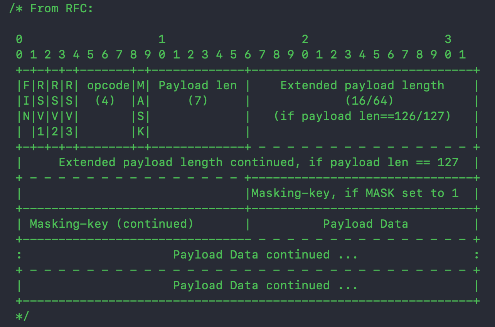

WebSocket
简介
Websocket 基于 TCP 的全双工通信协议，属于应用层协议，他必须依赖 HTTP 协议进行一次握手，握手成功后直接通过单个 TCP 传输数据。
特点
- 握手阶段使用HTTP连接；
- 可以发送文本，也可以发送二进制数据；
- 全双工通信；
- 协议标识符ws，加密是wss；
解决了什么问题
在没有 Websocket 之前，一般是通过 HTTP 轮询或者长轮询来实现数据推送
- 轮询：每隔一定时间发出一个请求，耗资源
- 长轮询：客户端发送一个超长时间的请求，服务器 hold 住这个请求，直到有新数据时返回
这两种方式都比较耗资源，而 Websocket 可以很好的解决这类问题
主要使用场景
- 股票行情推送
- 消息推送
- IM聊天
WebSocket 对比
Websocket 处于应用层协议，他必须依赖 HTTP 协议进行一次握手，握手成功后直接通过单个 TCP 传输数据。 Websocket 是为了解决 HTTP 轮询、长轮询的问题
- 轮询：每隔一定时间发出一个请求，耗资源
- 长轮询：客户端发送一个超长时间的请求，服务器hold住这个请求，直到有新数据时返回
WebSocket & Socket
Socket 本身并不是一个协议。它工作在 OSI 模型会话层（第5层），是为了方便大家直接使用更底层协议（一般是 TCP 或 UDP ）而存在的一个抽象层。Socket是对TCP/IP协议的封装，Socket本身并不是协议，而是一个调用接口(API)。
Socket 可以指定不同的传输协议（TCP 、UDP）
WebSocket 和 Socket 本质没有什么关系。WebSocket 基于 TCP ，Socket 可以基于 TCP、UDP
WebSocket & HTTP
- HTTP 是基于
请求-应答的方式，WebSocket是双向通信的 - WebSocket 连接使用的是HTTP协议进行连接的，发送了一个标记了 Upgrade 字段的请求，定义了一系列新的header域，标明是 WebSocket 连接。
- 都是基于TCP的应用层协议。
握手流程
通过 HTTP 连接，连接完成后用 TCP 通信
请求头
客户端发起带有 Upgrade 字段的 Get 请求，请求头字段如下：
Connection: Upgrade
Upgrade: websocket
Sec-WebSocket-Extensions: permessage-deflate; client_max_window_bits
Sec-WebSocket-Key: AAAAAAAA==
Sec-WebSocket-Version: 13
- Connection ：表示要升级协议
- Upgrade ：要升级的协议是 websocket
- Sec-WebSocket-Extensions ：表示客户端所希望执行的扩展（如消息压缩插件）
- Sec-WebSocket-Key ：webSocket 协议校验值，服务端拼接一段固定字符串后加密返回回来，防止错误连接
- Sec-WebSocket-Version ：websocket 的版本
响应头
HTTP返回101状态码，表示同意升级协议
Connection: Upgrade
Upgrade: websocket
Sec-Websocket-Accept: XXXXXXXX==
- Connection ：表示要升级协议
- Upgrade： 表示要升级到对应的协议
- Sec-Websocket-Accept： Sec-WebSocket-Key 的值加密后得到的值，用来给客户端校验
WebSocket 协议头

协议头最少2个字节，最多14个字节（基本头2字节 + Extended payload 8字节 + Masking-key 4字节）
FIN
0 ：表示不是消息的最后一个分片（fragment） 1 ：表示消息的最后一个分片
RSV1、RSV2、RSV3
应该是 reserve 的简称，表示保留字段；用来给扩展用的
Opcode
操作码
0：表示延续帧；0 ：表示本次数据传输采用了数据分片，除了首位分片，其他的中间分片需要使用这个标志位
1：表示文本帧
2：表示二进制帧
3-7：保留
8：表示连接断开
9：表示 ping 操作
A：表示 pong 操作
B-F：保留
Mask
0 ：服务端向客户端发送数据 1 ：客户端向服务端发送数据，此时会定义一个掩码键（Masking key），用来对数据反掩码
Payload len
假设 Payload len == x，那么当
x == 0 ~ 126 ：表示数据的长度为 x 字节； x == 126 ：表示后续2个字节的值为数据的长度（大端模式）； x == 127 ：表示后续8个字节的值为数据的长度；
Masking-key
用来对数据反掩码
Payload data
扩展数据：如果需要使用必须在握手阶段协商好数据长度； 应用数据：剩下的就是应用数据长度了；
客户端异常校验流程
- 检查服务端返回的状态码是否为 101, 代表服务端同意了协议升级
- 检查服务端响应是否包含 Upgrade 字段, 若缺失, 则终止握手
- 检查 Upgrade 字段的值是否为 websocket ，若不是, 则终止握手
- 校验服务端返回的 Sec-WebSocket-Accept 字段的值是否合法, 若不合法则，终止握手
- 若服务端返回的 Header 中包含 Sec-WebSocket-Extensions, 但该字段值并不在发起握手时传递的 Sec-WebSocket-Extensions 的列表中, 则终止握手
- 若服务端返回的 Header 中包含 Sec-WebSocket-Protocol, 但该字段值并不在发起握手时传递的 Sec-WebSocket-Protocol 的值列表中, 则终止握手
分片逻辑
不分片：FIN = 1 ； Opcode = 文本类型
分片：
第一片： FIN = 0 ； Opcode = 文本类型
中间片： FIN = 0 ； Opcode = 0
最后一片： FIN = 1 ； Opcode = 文本类型
控制命令
- Close frame ：接收到一方发来的 close frame 后，需要返回 close frame；
- Ping frame ：心跳机制，websocket 的 Keep-Alive 机制
- Pong frame ：接收到 ping 后，需要立即返回pong
心跳机制
客户端发起 Ping 命令，服务端返回 Pong 命令；超时则认为断开连接了
安全
建立连接时必须在请求头加上 Origin 字段，值为对应的域名；服务端会对 Origin 进行过滤，如果验证不通过返回403
[request setValue:@"https://online.xxxx.xxxx" forHTTPHeaderField:@"Origin"];
疑问
1. TCP UDP 协议头部都有端口、和校验这些，为什么 websocket 没有
因为 websocket 是基于 TCP 的，底层 TCP 传输；websocket 应用层协议，TCP传输层协议
2. 为什么客户端发送数据需要掩码，服务端发送数据又不需要掩码
掩码实际上就是简单异或计算出来的值，本身并不具备很强的安全性；之所以需要掩码，为了防止早期版本的协议中存在的代理缓存污染攻击（proxy cache poisoning attacks）等问题。
3. websocket 怎么处理粘包拆包问题的
通过 FIN 跟 Opcode 来判断
参考
WebSocket 协议完整解析
WebSocket协议：5分钟从入门到精通
RFC-6455 WebSocket 协议翻译